GNN을 이용한 노드 분류와 링크 예측
Chapter 12 · 11장 GNN 원리와 함께 읽기
0. 핵심 요약
11장은 그래프를 벡터로 바꾸는 representation 학습과 GNN의 원리(message passing, 정규화, attention)를 다뤘다. 12장은 그 원리를 두 개의 실제 문제에 끝까지 적용한다. 첫째는 비트코인 거래 그래프에서 합법·불법 거래를 가르는 노드 분류(자금세탁 방지, AML)이고, 둘째는 사용자–영화 평점 그래프에서 아직 없는 연결을 맞히는 링크 예측(추천)이다. 두 문제는 과제도 도메인도 다르지만 같은 다섯 단계, 곧 입력 데이터 → 그래프 프로세서 → 인코더 → 디코더 → 학습된 모델로 풀린다.
저자들이 강조하는 비교축은 세 가지다. ① 데이터를 GNN에 먹이는 방법(ID 재부여, edge_index, mask 또는 엣지 분할), ② 인코더로 GCN·GAT·SAGE를 갈아 끼우며 보는 성능과 비용, ③ 불균형 데이터에서 정밀도·재현율·F1과 혼동 행렬로 읽는 평가. 저자들은 두 과제 모두에서 SAGE가 전반적으로 좋은 균형을 보였다고 보고하지만, 링크 예측에서는 GCN이 재현율, SAGE가 정밀도에서 앞서 한 지표만으로 모델을 고를 수 없음을 함께 보여 준다.
- 문제 — 라벨이 드문 거래 그래프와 평점 그래프를, 어떻게 GNN이 먹을 수 있는 텐서와 올바른 학습·평가 분할로 바꿀 것인가?
- 메커니즘 — 같은 뼈대에서 어떤 그래프 유형·디코더·loss를 끼우면 노드 분류와 링크 예측으로 갈라지는가?
- 판단 — 91대 9 또는 1대 2로 치우친 평가 데이터에서 GCN·GAT·SAGE를 무엇으로 비교하고 어떻게 고를 것인가?
| 절 | 과제와 데이터 | 그래프·분할 | 디코더와 loss | 핵심 결과(교재 보고) |
|---|---|---|---|---|
| 12.1 | 노드 분류 · Elliptic 비트코인 거래, 불법 4,545 / 합법 42,019 / 미상 157,205 | 동질 Data · 노드 mask 80/10/10 | log_softmax + cross-entropy | SAGE가 불법 정탐률 약 83%로 최고, GCN은 약 68% |
| 12.2 | 링크 예측 · MovieLens 평점 100,836건 | 이질 HeteroData · 엣지 분할 80/10/10 + 부정 샘플 | dot product + binary cross-entropy | SAGE 정밀도 우선, GCN 재현율 우선, GAT는 양쪽 열세 |
11장에서 가져와야 12장이 읽히는 여섯 가지 개념
- 12장의 코드는 11장이 설명한 인코더–디코더, message passing, 정규화, attention을 이름만 바꿔 사용한다.
- 사용자 임베딩 행렬은 11장의 shallow 임베딩 그 자체이고, 그 한계도 그대로 따라온다.
- 이 절은 12장 본문이 아니라 두 장을 이어 읽기 위한 AIML Quant 보충이며, 장·절 번호는 11장의 것이다.
이 절의 내용은 12장 자체의 서술이 아니라 같은 책 11장에서 가져온 개념을 12장 코드와 결과에 대응시킨 것이다. 11장의 절 번호는 '11장 §11.5'처럼 장 이름을 붙여 12장의 번호와 구분한다.
① 인코더–디코더: representation을 만드는 부분과 쓰는 부분의 분리 (11장 §11.2)
11장은 임베딩 방법 전체를 두 부분으로 정리한다. 인코더는 그래프 구조(인접 행렬)와 노드 특징을 받아 노드마다 밀집 벡터를 만들고, 디코더는 그 벡터에서 원래 그래프의 속성(두 노드의 연결 여부, 이웃 겹침, 노드 라벨)을 복원하려 한다. 복원 오차가 학습 신호가 되어 인코더를 최적화한다. 12장은 이 틀의 구체적 사례 두 개다. 노드 분류의 디코더는 '노드 라벨 복원', 링크 예측의 디코더는 '두 노드의 연결 여부 복원'에 해당한다.
② message passing: 이웃을 모으고(AGGREGATE) 자기 representation을 갱신(UPDATE) (11장 §11.5)
GNN의 한 layer는 노드마다 세 일을 한다. 이웃의 이전 representation을 모으고, 모은 결과를 처리하고, 자기 representation을 갱신한다. 11장의 기본 모델은 이 규칙을 다음 식으로 쓴다.
$$h_u^{(k)}=\sigma\left(W_{\text{self}}^{(k)}h_u^{(k-1)}+W_{\text{neigh}}^{(k)}\sum_{v\in\mathcal N(u)}h_v^{(k-1)}+b^{(k)}\right)$$
$h_u^{(k)}$는 $k$번째 반복 뒤 노드 $u$의 representation, $W_{\text{self}}$와 $W_{\text{neigh}}$는 학습되는 가중치 행렬, $\sigma$는 ReLU 같은 비선형 함수, 합은 $u$의 모든 이웃 $v$에 대해 이전 representation을 더한다는 뜻이다. 작은 숫자로 읽어 보자(이해를 위한 예). $u$의 이전 representation이 $[1,0]$이고 이웃이 $[0,2]$, $[2,0]$, $[1,1]$이면 합은 $[3,3]$이다. 가중치를 단위 행렬로 두고 ReLU를 쓰면 새 representation은 $[1,0]+[3,3]=[4,3]$이다. 합 대신 평균을 쓰면 이웃 요약이 $[1,1]$이 되어 새 representation은 $[2,1]$이 된다. 이웃 수가 많은 노드일수록 합은 값이 커지고, 평균은 이웃 수와 무관한 크기를 유지한다.
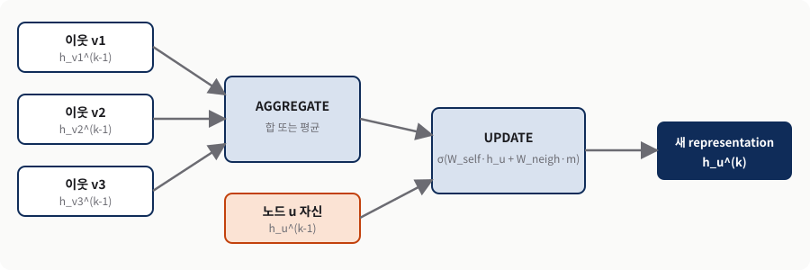
이웃 세 개가 한 번 집계되고 자기 representation과 합쳐져 새 representation이 되는 것이 GNN 한 layer이다. layer를 k번 쌓으면 노드 representation에 k걸음 안의 이웃 정보가 담긴다. 출처: 11장 §11.5의 AGGREGATE·UPDATE 정의를 재구성.이 layer를 두 번 쌓으면 노드 representation은 2-hop(두 걸음 안) 이웃까지의 정보를 담는다. 12장의 모든 인코더가 convolution layer 두 개(conv1, conv2)로 이루어진 것은 이 2-hop 시야를 쓴다는 뜻이다. 11장 §11.5.4는 자기 자신을 이웃에 포함해 AGGREGATE와 UPDATE를 하나로 합치는 self-loop 변형도 설명하며, 12장 GAT의 add_self_loops=True가 이 변형에 대응한다.
③ 이웃 정규화: GCN이 차수로 값을 눌러 주는 이유 (11장 §11.6.1)
합으로 집계하면 이웃이 많은 노드의 값이 커져 학습이 불안정해진다. 가장 단순한 처방은 평균이고, GCN이 쓰는 대칭 정규화는 이웃 $v$의 기여를 $\sqrt{|N(u)|\,|N(v)|}$로 나눈다. 받는 노드와 보내는 노드의 이웃 수가 모두 클수록 메시지가 약해진다. 11장은 수천 번 인용된 논문이 인용 네트워크의 message passing을 지배하지 않게 하는 예를 든다. 12장은 동질 그래프에서 이 정규화를 적용하는 정통 GCN layer GCNConv를 쓴다. 정규화는 노드 차수 정보를 흐리는 loss 연산이기도 하다고 11장은 덧붙인다.
④ attention: GAT가 이웃마다 가중치를 학습하는 방식 (11장 §11.6.2–11.6.3)
정규화는 이웃을 같은 비중으로 다룬다. 그래프 attention 네트워크(GAT)는 이웃마다 학습되는 가중치 $\alpha_{u,v}$를 두어 $m_{N(u)}=\sum_{v\in N(u)}\alpha_{u,v}h_v$로 집계한다. 가중치는 $u$와 $v$의 변환된 특징을 이어 붙인 값으로 점수를 매긴 뒤 softmax로 합이 1이 되게 정규화해 만든다. 서로 다른 관계를 병렬로 보는 멀티head attention도 있다. 12장에서 GAT가 매개변수 22,025개로 GCN(2,723개)의 여덟 배 가까이 되는 것은 attention 계수와 head 수(리스팅 12.13의 num_heads=8) 때문이라고 저자들이 설명한다.
⑤ shallow 임베딩의 한계가 12.2의 사용자 임베딩에 그대로 남는다 (11장 §11.3)
shallow 임베딩은 노드마다 벡터 한 줄을 갖는 lookup 테이블이다. 11장은 네 가지 한계를 든다. 매개변수가 노드 수에 비례해 늘고, 노드 사이에 매개변수를 공유하지 않으며, 노드 특징을 쓰지 못하고(특징 무지), 학습 때 없던 노드의 임베딩을 만들 수 없다(전이적). 12.2의 MovieLensEmbedding은 사용자마다 학습되는 행을 두는 Embedding(610, d)라 구조상 shallow 임베딩이다. 그 위에 이질 GNN이 이웃 정보를 얹어 다듬는 것이 'shallow 임베딩의 한계를 GNN으로 보완한다'는 11장의 흐름과 맞닿는다. 다만 사용자 행 자체는 그대로이므로, 평점이 없는 신규 사용자는 임베딩 행이 없어 학습 시점의 사용자 집합에만 예측할 수 있다는 점은 12장 코드의 구조에서 읽히는 해석이며 12장이 직접 서술한 내용은 아니다.
⑥ 전이적 학습과 귀납적 학습: 12.1과 12.2는 어디에 서 있나 (11장 §11.1.1)
전이적 학습은 고정된 노드 집합에 대해 임베딩을 최적화하고, 귀납적 학습은 처음 보는 노드에도 적용되는 매개변수적 사상을 학습한다. 12.1의 Elliptic 거래 그래프는 학습 전에 전체 그래프가 주어지고 라벨 없는 노드의 특징까지 message passing에 쓰이는 준지도(전이적) 설정이다. GNN 가중치는 노드와 무관한 공유 행렬이라 새 거래가 추가되어도 원리상 적용할 수 있지만, 12.1의 실험은 그 상황을 평가하지 않는다. 이 문장 역시 11장 개념을 12장 설정에 적용한 보충이다.
| 11장 개념 | 12장에서 나타나는 곳 | 읽을 때 확인할 점 |
|---|---|---|
| 인코더–디코더 (§11.2) | 노드 분류·링크 예측 모델 클래스(코드 12.10, 12.22) | 인코더는 GNN, 디코더는 과제별 함수(log_softmax 또는 dot product) |
| message passing (§11.5) | 두 layer 기본 모델의 conv1·conv2(코드 12.11) | convolution layer 두 개는 2-hop 이웃을 본다 |
| 대칭 정규화 (§11.6.1) | 동질 GCN (GCNConv) | 이질 그래프에서는 GraphConv로 대체되어 정규화가 같지 않다 |
| attention·멀티head (§11.6.2–11.6.3) | GAT 모델 클래스(코드 12.13) | head 수와 self-loop 인자, 매개변수 증가 |
| shallow 임베딩 (§11.3) | 사용자·영화 Embedding(코드 12.23) | 사용자 행은 학습되는 lookup 테이블 |
| 전이적·귀납적 (§11.1.1) | 12.1 mask 분할, 12.2 엣지 분할 | 평가 대상 노드·엣지가 학습 때 그래프 안에 있었는가 |
12.1 자금세탁 방지를 위한 노드 분류 — 그래프에서 수상한 노드 찾기
- 금융 거래를 그래프로 놓으면 계좌나 개체가 노드, 거래가 엣지다. 목표는 각 노드를 합법 또는 불법으로 분류하는 것이다.
- 데이터는 Elliptic 비트코인 거래 그래프이고, 극단적으로 치우친 클래스 분포가 이후 모든 평가 선택을 좌우한다.
- 이 절은 입력 → 그래프 프로세서 → 인코더 → 디코더 → 평가를 따라간다.
노드 분류는 '이 노드는 무엇인가'를 맞히는 과제다. 자금세탁 방지(AML, anti-money laundering)에서는 불법 자금의 흐름을 찾는 것이 목적이어서, 거래 사이의 연결을 이용할 수 있는 그래프 방식이 자연스럽다. 한 거래의 특징만이 아니라 그 거래가 어떤 거래들과 이어져 있는지가 판정에 쓰인다.
저자들은 이 장 전체의 뼈대를 먼저 보인다(그림 2). 입력 데이터(대개 여러 객체와 상호작용을 기술한 반정형 소스)를 그래프 프로세서가 그래프로 가공하고, 그 그래프가 인코더–디코더에 들어가며, 출력은 추론 단계에 쓸 수 있는 학습된 모델이다. 12.1과 12.2는 이 뼈대의 같은 칸에 서로 다른 부품을 끼운 두 사례다.
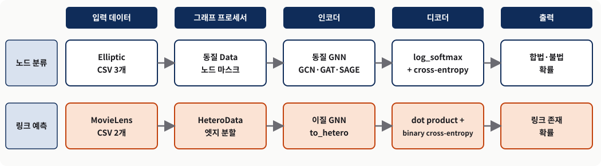
위 행(남색)과 아래 행(주황)에서 세 번째 열까지는 그래프 유형만 다르고, 네 번째 열에서 loss가 갈라진다. 각 열의 상세는 12.1.2–12.1.4와 12.2.2–12.2.4에서 풀어 쓴다. 출처: 교재 그림 12.1·12.2·12.7의 구성요소를 한 장으로 재배치.12.1.1 입력 데이터 — Elliptic 비트코인 거래 그래프
- Elliptic은 20만 개 넘는 거래(노드), 23만 4천 개의 방향성 지불 흐름(엣지), 익명화된 노드 특징 166개로 이루어진 시계열 그래프다.
- 노드의 77%는 라벨이 없고, 라벨이 있는 노드 중 불법은 소수다.
데이터는 세 파일이다(2025년 1월 기준 교재 서술). elliptic_txs_features.csv는 203,769행 167열로 첫 열이 노드 ID, 나머지가 익명화된 특징이다. elliptic_txs_edgelist.csv는 234,355행 2열로 출발 노드와 도착 노드를 나열한다. elliptic_txs_classes.csv는 203,769행 2열로 노드마다 라벨(1, 2, 또는 unknown)을 지정한다. 라벨 1은 불법, 2는 합법이다(표 3).
| 클래스 | 원본 라벨 | 개수 | 비율 |
|---|---|---|---|
| 미상(Unknown) | unknown | 157,205 | 77.15% |
| 합법(Licit) | 2 | 42,019 | 20.62% |
| 불법(Illicit) | 1 | 4,545 | 2.23% |
세 값의 합은 203,769로 노드 수와 같다. 라벨이 있는 노드만 보면 46,564개이고 불법은 그중 약 9.8%(4,545 ÷ 46,564)다. 정답 없는 노드가 압도적으로 많고, 정답이 있는 노드 안에서도 찾으려는 쪽이 약 10%뿐인 구조가 불균형 데이터다. 저자들은 이 조건이 평가 지표를 고를 때 계속 따라온다고 짚는다. 이 비율의 산술(9.8%)은 표의 개수에서 계산한 AIML Quant 보충이다.
모든 노드를 '합법'이라 답하는 분류기도 라벨 있는 노드 기준으로 약 90%를 맞힌다(합법 비율, 이해를 위한 계산). 정확도가 높아도 찾으려는 불법 노드를 하나도 못 찾을 수 있으므로, 12.1.5에서 정밀도·재현율·F1과 혼동 행렬로 평가한다.
12.1.2 그래프 프로세서: 데이터 준비 — ID를 새로 매기고 텐서로 만들기
- 2억이 넘는 원본 ID를 0부터 시작하는 연속 ID로 바꿔야 엣지 텐서가 노드 배열의 인덱스가 될 수 있다.
- 결과물은 세 텐서다.
edge_index,node_features,node_labels.
GNN은 노드를 표 안의 위치(번호)로 가리킨다. 원본 txId가 2억이 넘는 큰 수이므로 그대로 위치로 쓰면 낭비가 크다. 그래서 특징 파일에 나온 순서대로 0, 1, 2, …를 다시 매기고(코드 12.1), 이 새 ID로 엣지 목록을 갱신한다(표 4). 이 번호 체계가 특징 텐서의 행 번호와 일치해야 엣지와 특징이 같은 노드를 가리킨다.
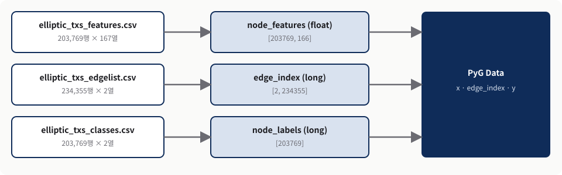
왼쪽 세 파일과 가운데 세 텐서가 일대일로 대응하고, 세 텐서가 오른쪽Data 객체의 x·edge_index·y가 된다. 12.1.2는 가운데 열까지, 12.1.3은 오른쪽 열을 만든다. 출처: 교재 그림 12.3과 리스팅 12.1–12.6의 흐름을 재구성.
Listing 12.1 노드에 새 연속 ID를 부여하고 엣지 데이터 갱신하기
사전 tx_id_mapping이 원본 ID를 순번으로 바꾸고, assign이 출발·도착 노드를 각각 Id1, Id2 열로 붙인다. dropna는 특징 파일에 없는 노드로 향하는 엣지를 걸러 내고, astype은 NaN이 섞여 실수형이 된 열을 정수로 되돌린다.
tx_id_mapping = {tx_id: idx for idx, tx_id in enumerate(features['txId'])}
edges_with_features = edges.assign(
Id1=edges['txId1'].map(tx_id_mapping),
Id2=edges['txId2'].map(tx_id_mapping),
)
edges_with_features = edges_with_features.dropna(subset=['Id1', 'Id2'])
edges_with_features = edges_with_features.astype({
'Id1': 'int64',
'Id2': 'int64',
})| txId1 | txId2 | Id1 | Id2 |
|---|---|---|---|
| 230425980 | 5530458 | 0 | 2 |
| 232022460 | 232438397 | 2 | 3 |
| 230460314 | 230459870 | 4 | 5 |
| 230333930 | 230595899 | 6 | 7 |
| 232013274 | 232029206 | 8 | 9 |
인쇄된 교재 표 12.3에서 맨 위 엣지의 도착 번호(Id2)는 2인데, 바로 아래 엣지에서 번호 2는 다른 원본 ID(232022460)의 출발 노드로 쓰인다. 한 번호가 두 노드를 가리킬 수 없고, 바로 다음 출력 예시(코드 12.3)도 이 엣지를 (0, 1)로 보여 준다. 맨 위 엣지의 도착 번호는 1이어야 일관된다. 표를 따라 그리는 학습자가 헷갈리지 않도록 인쇄값을 그대로 옮기고 불일치만 표시한다.
Listing 12.2 연속 노드 ID를 사용해 edgeindex 텐서 만들기
.values.T의 전치(가로세로 뒤집기)가 핵심이다. 데이터프레임은 엣지 하나를 한 줄에 담지만, PyG는 엣지를 [2, 엣지 수] 모양, 곧 모든 출발 노드의 목록과 모든 도착 노드의 목록을 나란히 놓은 형태로 기대한다.
edge_index = torch.tensor(
edges_with_features[['Id1', 'Id2']].values.T,
dtype=torch.long
)Listing 12.3 edgeindex 텐서 샘플
출력 예시다. 위 목록이 출발 노드, 아래 목록이 도착 노드이므로 세로로 묶인 한 쌍 (0, 1)은 '노드 0에서 노드 1로 향하는 엣지'를 뜻한다.
tensor([[ 0, 2, 4, ..., 201921, 201480, 201954],
[ 1, 3, 5, ..., 202042, 201368, 201756]])작은 예로 확인하자(이해를 위한 예). 노드 A, B, C에 번호 0, 1, 2를 주고 A→B, B→C 두 엣지가 있다면 edge_index는 [[0, 1], [1, 2]]다. 열 단위로 읽으면 (0→1), (1→2)이고, 행 단위로 읽으면 '출발 목록'과 '도착 목록'이다(그림 4).
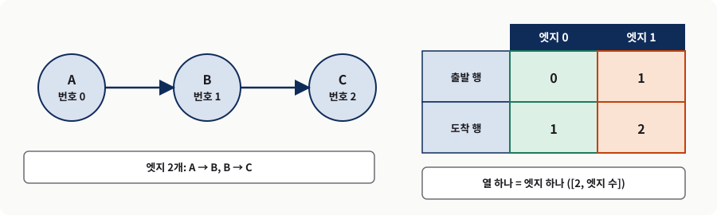
왼쪽 그래프의 엣지 하나가 오른쪽 텐서의 열 하나가 된다. 위쪽 칸은 출발 노드 번호, 아래쪽 칸은 도착 노드 번호이고 같은 색이 같은 엣지다. 실제 Elliptic 데이터가 아니라 개념을 보이려고 만든 3노드 예다. 출처: 리스팅 12.2–12.3의 설명을 바탕으로 한 AIML Quant 보충.Listing 12.4 원본 노드 ID를 떼어내고 노드 특징 텐서 만들기
txId 열을 버리고 특징 열만 실수 텐서로 만든다. 결과 node_features는 [203769, 166] 크기이며, 맨 위 한 줄이 노드 0(원본 ID 230425980)의 특징 166개다.
node_features = torch.tensor(
features.drop(columns=['txId']).values,
dtype=torch.float
)Listing 12.5 원본 노드 클래스를 숫자 표현으로 변환하기
LabelEncoder가 범주형 라벨을 숫자로 바꾸고 inverse_transform은 검증용 역변환을 제공한다. 결과 node_labels는 크기 203,769의 정수 텐서다.
from sklearn.preprocessing import LabelEncoder
le = LabelEncoder()
class_labels = le.fit_transform(classes['class'])
original_labels = le.inverse_transform(class_labels)
node_labels = torch.tensor(class_labels, dtype=torch.long)교재 해설은 이 단계 끝에서 '라벨 0은 합법(원본 1), 라벨 1은 불법(원본 2)'이라고 적는다. 그런데 앞의 표 3은 불법이 원본 라벨 1이고 합법이 2라고 한다. LabelEncoder는 범주를 정렬된 순서로 번호 매기며 문자열 '1', '2', 'unknown'은 이 순서로 정렬되므로 0이 원본 1(불법), 1이 원본 2(합법), 2가 미상이 된다. 해설의 서술과 표가 서로 반대 방향이므로, 이후 혼동 행렬의 '첫 행'을 읽기 전에 le.classes_로 어느 쪽이 불법인지 직접 확인하는 것이 안전하다. 이 지적은 문서 내 표와 라이브러리 동작에 대한 일반 지식에서 도출한 것이며 코드를 실행해 검증한 것은 아니다.
| 원본 라벨 | 뜻 | 변환된 숫자 | 노드 수 |
|---|---|---|---|
| 1 | 불법 | 0 | 4,545 |
| 2 | 합법 | 1 | 42,019 |
| unknown | 미상 | 2 | 157,205 |
12.1.3 그래프 프로세서: 동질 PyG 그래프 — 학습·검증·테스트로 쪼개기
- 세 텐서를 PyG
Data객체에 담고, 불리언 mask로 라벨 있는 노드를 학습 80%·검증 10%·테스트 10%로 나눈다. - 그래프는 자르지 않는다. 분할은 '어느 노드에 loss를 계산하는가'만 정한다.
PyG의 Data 객체는 노드 특징 x, 엣지 edge_index, 라벨 y를 한데 담는다(리스팅 12.6). 모델은 정답이 있는 노드에서만 배워야 하므로 mask로 정답 있는 노드를 고른다. 미상 노드는 정답이 없어 loss 계산에서 빠지지만 그래프에는 남아 이웃으로서 정보를 전달한다. 이 점이 표 형태 데이터의 분할과 다르다. 표 데이터는 행을 물리적으로 나누지만, 그래프는 이웃 관계가 끊기면 message passing이 무너지므로 그래프는 그대로 두고 loss를 계산할 노드만 나눈다(AIML Quant 보충 해석).
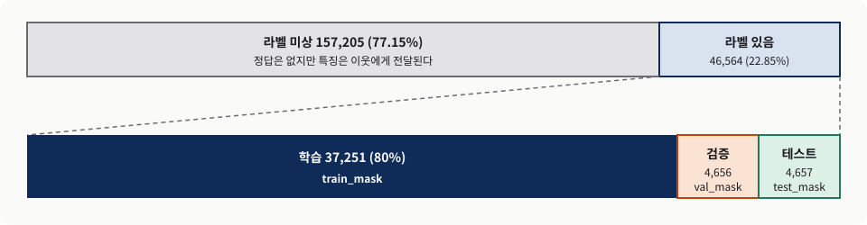
위 막대는 전체 노드, 아래 막대는 라벨 있는 노드만 확대한 것이어서 두 막대의 길이는 같은 축척이 아니다. 아래 세 구간은 서로 겹치지 않는 노드 집합이고 미상 노드는 어느 mask에도 들지 않는다. 출처: 교재 표 12.1·12.4와 리스팅 12.7–12.9의 수치로 재구성.Listing 12.6 데이터 준비 결과로 PyG Data 객체 만들기
앞 절의 세 텐서를 그대로 이름 붙여 담는다. 이후 mask도 이 객체에 속성으로 붙는다.
from torch_geometric.data import Data
data = Data(x=node_features,
edge_index=edge_index,
y=node_labels)Listing 12.7 알려진 노드 라벨만 골라내는 마스크 필터 준비하기
known_mask는 라벨이 0 또는 1인 노드가 True, unknown_mask는 라벨이 2인 노드가 True다.
known_mask = (data.y == 0) | (data.y == 1)
unknown_mask = data.y == 2Listing 12.8 학습·검증·테스트 데이터셋의 크기 정하기
알려진 노드 수를 세고 무작위 순열 permutations을 만든 뒤 80%·10%를 정수로 잘라 학습·검증 크기를 정한다. 나머지가 테스트 크기이며 세 크기의 합 total은 알려진 노드 수와 같아야 한다.
import numpy as np
num_known_nodes = known_mask.sum().item()
permutations = torch.randperm(num_known_nodes)
train_size = int(0.8 * num_known_nodes)
val_size = int(0.1 * num_known_nodes)
test_size = num_known_nodes - train_size - val_size
total = train_size + val_size + test_size| 데이터셋 | 노드 수 | 비율 |
|---|---|---|
| 학습(Training) | 37,251 | 80% |
| 검증(Validation) | 4,656 | 10% |
| 테스트(Testing) | 4,657 | 10% |
Listing 12.9 PyG Data 객체 위의 학습·검증·테스트 마스크
세 mask를 모두 False로 시작한다. 알려진 노드의 실제 인덱스 nonzero_indices를 무작위 순열로 섞은 순서대로 앞 80%, 다음 10%, 마지막 10%로 잘라 각 mask의 해당 위치를 True로 켠다. 순열 한 번을 순서대로 자르므로 세 집합은 겹치지 않는다.
train_mask = torch.zeros(data.num_nodes, dtype=torch.bool)
val_mask = torch.zeros_like(train_mask)
test_mask = torch.zeros_like(train_mask)
nonzero_indices = known_mask.nonzero(as_tuple=True)[0]
train_indices = nonzero_indices[permutations[:train_size]]
val_indices = nonzero_indices[
permutations[train_size:train_size + val_size]
]
test_indices = nonzero_indices[permutations[train_size + val_size:]]
train_mask[train_indices] = True
val_mask[val_indices] = True
test_mask[test_indices] = True
data.train_mask = train_mask
data.val_mask = val_mask
data.test_mask = test_mask| 데이터셋 | 전체 | 합법 | 합법(%) | 불법 | 불법(%) 인쇄 | 불법(%) 재계산 |
|---|---|---|---|---|---|---|
| 학습 | 37,251 | 33,645 | 90.32 | 3,606 | 9.78 | 9.68 |
| 검증 | 4,656 | 4,193 | 90.06 | 463 | 9.88 | 9.94 |
| 테스트 | 4,657 | 4,181 | 89.78 | 476 | 9.45 | 10.22 |
세 분할 모두 합법이 약 90%, 불법이 약 10%로 무작위 분할이 클래스 비율을 대체로 보존했다. 개수 열은 서로 맞는다. 세 분할의 합법을 더하면 42,019, 불법을 더하면 4,545로 표 3과 일치한다. 다만 인쇄된 불법 비율 열은 개수에서 나눈 값과 어긋난다. 예컨대 학습 3,606 ÷ 37,251은 9.68%이고 인쇄값은 9.78%다. 테스트 476 ÷ 4,657은 10.22%인데 인쇄값은 9.45%다. 마지막 열은 AIML Quant 재계산이며 어느 쪽 숫자를 인용하든 개수와 함께 밝히는 것이 안전하다.
저자들은 이 분류 과제의 분할을 스크립트로 직접 수행했고, 12.2.3에서는 PyG가 제공하는 분할 기능(RandomLinkSplit)을 쓴다고 예고한다.
12.1.4 인코더–디코더 아키텍처 — GNN이 특징을 만들고, 소프트맥스가 판정한다
- 모델은
NodeClassifier하나로, GNN 인코더의 출력에log_softmax를 씌운다. - 인코더는 convolution layer 두 개 + ReLU의 공통 골격에서 합성곱 종류만 GCN·GAT·SAGE로 바꾼다.
11장에서 소개한 인코더–디코더가 여기서 코드가 된다. 인코딩 국면은 각 노드의 representation을 이웃 정보로 갱신하고, 디코딩 국면은 log_softmax로 노드마다 클래스 확률을 낸다(그림 6).
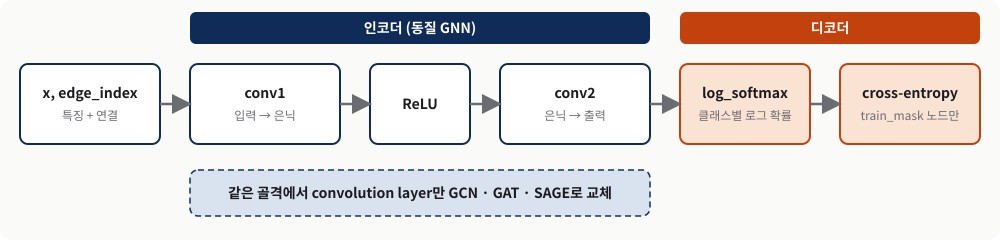
남색 영역이 인코더, 주황 영역이 디코더다. 교체 가능한 부분은 convolution layer 하나뿐이고 나머지는 세 모델이 공유하므로, 이후 성능 차이는 이웃 집계 방식의 차이로 읽을 수 있다. 출처: 교재 그림 12.4와 리스팅 12.10–12.11을 재구성.Listing 12.10 노드 분류를 위한 인코더–디코더 구현
생성자는 GNN 모델을 받아 보관하고, forward는 GNN을 통과한 노드 점수에 log_softmax를 적용한다. dim=1은 클래스 방향으로 정규화한다는 뜻이다.
import torch
import torch.nn.functional as F
class NodeClassifier(torch.nn.Module):
def __init__(self, gnn_model):
super().__init__()
self.gnn = gnn_model
def forward(self, x, edge_index):
x = self.gnn(x, edge_index)
return F.log_softmax(x, dim=1)인코더 — 이웃의 정보를 끌어모으는 message passing
인코더는 단일 유형의 노드와 엣지만 가진 동질 GNN으로 message passing을 수행한다(11장 §11.5 참고). 세 인코더가 공유하는 특성은 기본 클래스 BaseGraphModel에 담긴다. 입력·은닉·출력 차원과 convolution layer 종류(conv_layer), 그 layer에 전달할 추가 인자(**conv_kwargs)를 받아 첫 합성곱, ReLU, 둘째 합성곱을 차례로 적용한다.
Listing 12.11 일반적인 GNN 인코더를 정의하는 기본 그래프 모델
conv1은 입력 차원에서 은닉 차원으로, conv2는 은닉 차원에서 출력 차원으로 간다. 사이에 ReLU가 비선형성을 넣는다. 합성곱이 두 layer이므로 노드 representation은 2-hop 이웃까지의 정보를 담는다(11장 연결 ②).
import torch
import torch.nn.functional as F
class BaseGraphModel(torch.nn.Module):
def __init__(self, input_dim,
hidden_dim,
out_dim,
conv_layer,
**conv_kwargs):
super(BaseGraphModel, self).__init__()
self.conv1 = conv_layer(input_dim, hidden_dim, **conv_kwargs)
self.conv2 = conv_layer(hidden_dim, out_dim, **conv_kwargs)
def forward(self, x, edge_index):
x = self.conv1(x, edge_index)
x = F.relu(x)
x = self.conv2(x, edge_index)
return xListing 12.12 기본 클래스로부터 구현한 SAGE 모델
SAGEConv는 추가 매개변수가 필요 없으므로 convolution layer 종류만 넘기면 된다.
from torch_geometric.nn import SAGEConv
class SAGE(BaseGraphModel):
def __init__(self, input_dim, hidden_dim, out_dim):
super(SAGE, self).__init__(
input_dim=input_dim,
hidden_dim=hidden_dim,
out_dim=out_dim,
conv_layer=SAGEConv
)Listing 12.13 기본 클래스를 확장해 구현한 GAT 모델
GAT는 attention head 수(num_heads)와 self-loop 여부(add_self_loops) 같은 추가 인자를 convolution layer에 전달해야 해서 기본 클래스를 확장한다. 교재 해설은 본문을 생략 표시(...)로 줄여 싣고 이어지는 부분을 그림으로 보여 준다. 아래는 해설에 실린 부분만 옮긴 것이다. 이웃마다 학습 가능한 계수를 두는 attention 때문에 GAT의 매개변수가 늘어난다(11장 연결 ④).
from torch_geometric.nn import GATConv
class GAT(BaseGraphModel):
def __init__(self, input_dim,
hidden_dim,
out_dim,
num_heads=8,
add_self_loops=True):
# GAT 모델 초기화
...디코더 — 로그 softmax와 cross-entropy loss의 협업
softmax는 여러 클래스의 점수를 0과 1 사이의 확률로 바꾸어 합이 1이 되게 하고, 로그 softmax는 그 확률에 로그를 취한 값이다. 로그를 취하면 곱셈이 덧셈이 되어 아주 작거나 큰 수에서도 수치가 안정적이다. loss는 '얼마나 틀렸는지'의 벌점이고, 학습은 이 벌점을 줄이는 방향으로 진행된다.
작은 계산으로 읽어 보자(이해를 위한 예). 불법과 합법 두 클래스의 점수가 (2.0, 0.0)이면 softmax 확률은 약 (0.881, 0.119), 로그 확률은 약 (−0.127, −2.127)이다. 실제 정답이 합법이면 벌점은 2.127이고 불법이면 0.127이다. 모델이 불법에 높은 확률을 주었는데 정답이 합법이면 큰 벌점을 받아 그 방향으로 가중치가 수정된다.
교재는 log_softmax를 PyTorch CrossEntropyLoss와 짝으로 설명한다. 일반적으로 CrossEntropyLoss는 내부에서 로그 softmax를 적용한 뒤 음의 로그 우도를 계산하고, 이미 로그 확률을 내는 모델에는 음의 로그 우도 loss(nll_loss)가 짝이다. 로그 확률에 로그 softmax를 한 번 더 적용해도 값이 변하지 않으므로(로그 확률을 지수화해 더하면 1이라 정규화 항이 0) 어느 쪽을 쓰든 학습 신호는 같다. 이 설명은 수식으로 도출한 것이며 PyTorch 버전별 구현은 확인하지 않았다.
12.1.5 평가와 분석 — 세 인코더 GCN·GAT·SAGE 비교
- 세 모델의 매개변수 수와 학습 시간은 GCN < SAGE < GAT 순서다.
- 검증 곡선에서는 정밀도가 모델을 가르고 재현율은 비슷하다. 저자들은 SAGE의 F1이 가장 높다고 보고한다.
- 테스트 혼동 행렬에서 불법 노드 정탐률은 GCN 약 68%, GAT 약 81%, SAGE 약 83%로 차이가 크다.
세 엔드투엔드 모델을 비교한 조건은 T4 Colab 머신에서 400 epoch 학습이다. 저자들은 코드를 직접 돌리면 값이 본문과 조금 다를 수 있다고 미리 밝힌다. 초기화와 샘플링에 무작위성이 있기 때문이며 오류의 신호가 아니다.
| 인코더 | 매개변수 수 | 학습 시간(초) |
|---|---|---|
| GCN | 2,723 | 19.02 |
| GAT | 22,025 | 43.45 |
| SAGE | 5,427 | 36.71 |
GCN이 가장 효율적이고 GAT가 가장 비효율적이다. 저자들은 학습 시간이 매개변수 수와 연결된다고 설명하며, GAT는 이웃 엣지마다 학습 가능한 계수를 도입하는 attention 때문에 22,025개로 가장 많다고 한다. 표만 보면 SAGE(5,427개)가 GCN보다 매개변수는 약 두 배인데 학습 시간은 약 1.9배로 비슷하게 늘지만, GAT(22,025개)는 매개변수가 8배인데 시간은 GCN의 약 2.3배라 매개변수 수가 시간을 완전히 설명하지는 않는다(표의 숫자에서 계산한 AIML Quant 관찰).
정밀도, 재현율, F1 점수 — 세 질문으로 성능 읽기
저자들은 세 지표를 AML 맥락의 질문으로 번역한다. 정밀도는 모델이 불법 또는 합법이라 말한 것 가운데 실제로 맞은 비율, 재현율은 실제 해당하는 노드 중 모델이 찾아낸 비율, F1은 둘의 조화 평균으로 균형을 나타낸다. 작은 예로 확인하자(이해를 위한 예). 거래 100개 중 불법이 10개인데 모델이 불법이라 지목한 8개 가운데 6개가 실제 불법이면 정밀도는 6/8=0.75, 재현율은 6/10=0.60이고 F1은 2×0.75×0.60÷(0.75+0.60)≈0.67이다(그림 7). 같은 예에서 정확도는 (6+88)÷100=94%로 높게 보이지만 불법의 40%를 놓친 모델이라는 사실은 정확도에 드러나지 않는다.
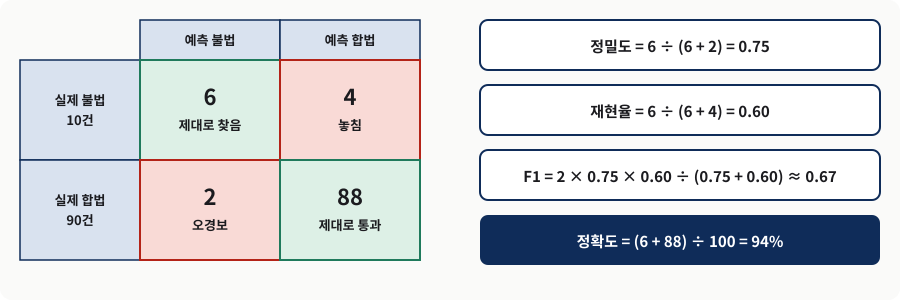
왼쪽 2×2 표의 초록 칸이 맞힌 경우, 빨강 칸이 틀린 경우다. 정밀도는 '불법이라고 예측한' 칸 두 개에서, 재현율은 '실제로 불법인' 칸 두 개에서 나온다. 교재의 측정값이 아니라 지표 정의를 보이려고 만든 가상의 100건이다. 출처: 12.1.5의 지표 정의를 바탕으로 한 AIML Quant 보충.평가 함수는 scikit-learn의 채점 함수이며, 합법이 불법보다 훨씬 많은 데이터를 다루기 위해 가중 평균(클래스별 지표를 해당 클래스 표본 수로 가중해 평균)을 택했다. 가중 평균은 데이터 분포를 반영하므로 일반 평가에는 적합하지만, 다수 클래스(합법)의 성능이 지표를 더 크게 좌우한다는 뜻이기도 하다.
검증 데이터셋의 지표 추이(교재 그림 12.5, 가로축 epoch)에 대해 저자들은 다음과 같이 해석한다. 이 그래프 자체는 이 리포트에 재현하지 않았고 아래는 교재의 서술이다.
- 정밀도 — SAGE가 학습 내내 가장 높고 일관되며, GAT가 바짝 뒤쫓는다. GCN이 가장 낮고 특히 초기 epoch에서 합법·불법을 자주 잘못 분류한다.
- 재현율 — 세 모델이 비슷한 값에 도달해 거의 모든 노드를 효과적으로 탐지한다. 다만 거짓 양성을 고려하지 못하므로 정밀도와 함께 봐야 한다.
- F1 — SAGE가 가장 높고 GAT는 거의 대등하다. GCN은 재현율이 높지만 정밀도가 낮아 균형이 상대적으로 약하다.
혼동 행렬 — 합법과 불법을 나눠서 들여다보기
혼동 행렬은 클래스별로 맞힌 개수와 틀린 개수를 보여 주어, 가중 평균이 가리는 소수 클래스의 성능을 드러낸다. 테스트 데이터셋의 혼동 행렬에 대한 저자들의 해석은 다음과 같다(그림 8).
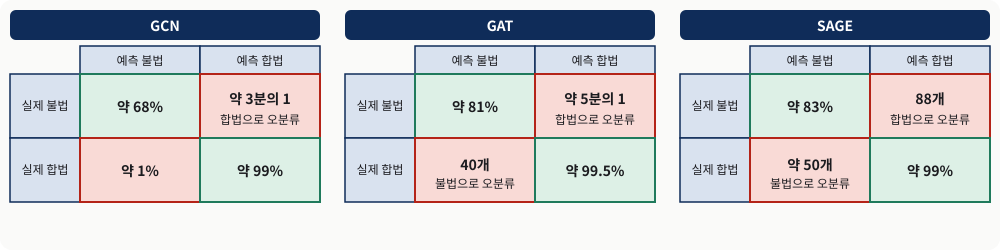
초록 칸이 맞힌 경우, 빨강 칸이 틀린 경우다. 각 칸의 값은 교재 본문이 말로 서술한 비율 또는 개수를 그대로 옮긴 것이어서 칸마다 단위(비율·개수)가 섞여 있고, 교재 그래프의 전체 개수는 본문에 없다. 출처: 교재 §12.1.5 본문 서술을 2×2로 재구성.- GCN — 불법의 약 68%, 합법의 약 99%를 맞힌다. 불법 노드의 약 3분의 1이 합법으로 오분류되고, 합법 노드의 약 1%가 불법으로 오분류된다.
- GAT — 불법의 약 81%, 합법의 약 99.5%를 맞힌다. 불법 노드 다섯 중 약 하나가 합법으로 오분류되고 합법 노드는 40개만 불법으로 오분류된다.
- SAGE — 불법의 약 83%, 합법의 약 99%를 맞힌다. 불법 노드 88개가 합법으로, 합법 노드 약 50개가 불법으로 오분류된다.
합법 노드 정탐률은 세 모델이 모두 99% 안팎으로 붙어 있어, 모델을 가르는 것은 불법 노드를 얼마나 찾느냐다. 검증 지표(가중 평균)에서는 격차가 작아 보이던 것이 혼동 행렬에서는 크게 보이는 이유가 여기에 있다. 저자들은 SAGE의 균형과 최소 오분류가 AML처럼 불법 탐지가 결정적인 응용에 가장 믿을 만하다고 결론짓는다.
SAGE의 오분류 88개를 표 7의 테스트 불법 노드 476개로 나누면 약 18.5%이고, 정탐률은 약 81.5%다. 본문의 '약 83%'와 어림 수준의 차이가 있다. 본문의 비율과 개수가 같은 행렬에서 나왔는지 교재 그래프로 확인하기 전에는 둘 중 하나를 고정 사실로 인용하지 않는 편이 안전하다. 또한 위 모델 비교는 한 번의 무작위 분할·초기화 결과이며 반복 실험의 분산은 제시되지 않는다.
12.2 영화 추천을 위한 링크 예측 — 아직 없는 연결을 맞히기
- 노드 분류가 '이 노드는 무엇인가'라면 링크 예측은 '이 두 노드 사이에 연결이 있을까'다.
- 사용자와 영화를 노드, 평점을 엣지로 놓은 이질 그래프에서 사용자–영화 링크를 예측한다.
- 같은 뼈대에서 그래프는 이질로, 디코더는 dot product + binary cross-entropy로 바뀐다.
링크 예측은 추천 시스템에 잘 들어맞는다. 상호작용과 선호를 개체 사이의 링크로 모델링하면 '아직 없는 링크'를 예측하는 것이 곧 추천이다. 저자들의 목표는 무관한 추천은 피하면서 관련 있는 영화를 제안하는 GNN의 능력을 평가하는 것이다. 12.1과 달리 디코더는 노드 하나의 클래스가 아니라 노드 쌍에 대한 점수를 낸다.
12.2.1 입력 데이터 — MovieLens 평점 데이터
- MovieLens 소형 버전을 쓴다. 영화 정보 파일과 평점 파일 두 개만 필요하다.
- 링크 예측에서는 점수 값보다 '이 사용자가 이 영화에 평점을 매겼다'는 연결 자체가 신호다.
교재는 이 데이터를 약 600명의 사용자가 9,000편의 영화에 매긴 100,000개의 평점과 3,600개의 태그 적용으로 소개한다. 정확한 개수는 파일 설명(영화 9,742행, 평점 100,836행)과 12.2.3의 구조 출력(사용자 노드 610개)에 나온다. 원본은 GroupLens의 ml-latest-small.zip이다(2025년 1월 기준).
movies.csv(9,742행 3열)는 영화 ID, 제목, 장르이고 이 장은 movieId와 genres만 쓴다. 장르는 파이프(|)로 구분된 문자열이다. ratings.csv(100,836행 4열)는 사용자 ID, 영화 ID, 평점, 타임스탬프이고 이 장은 userId와 movieId만 쓴다(표 9, 표 10). 평점 값을 쓰지 않으므로 이 실험의 링크는 '평가했다/안 했다'의 이진 사실이고 '좋아한다'는 뜻이 아니라는 점을 기억해야 한다(AIML Quant 보충 해석).
| movieId | genres |
|---|---|
| 1 | Adventure|Animation|Children|Comedy|Fantasy |
| 2 | Adventure|Children|Fantasy |
| 3 | Comedy|Romance |
| 4 | Comedy|Drama|Romance |
| 5 | Comedy |
| userId | movieId |
|---|---|
| 1 | 1 |
| 2 | 3 |
| 2 | 6 |
| 1 | 47 |
| 1 | 50 |
12.2.2 그래프 프로세서: 데이터 준비 — 장르를 특징 벡터로, 평점을 엣지로
- 장르 문자열은 영화마다 20차원 이진 벡터가 된다. 한 영화가 여러 장르에 속하면 여러 칸이 1이다.
- 사용자·영화 원본 ID는 각자 0부터 시작하는 연속 ID로 바뀌고,
edge_index는 사용자 번호 목록과 영화 번호 목록을 나란히 놓은 것이다.
Listing 12.14 장르 정보를 특징 벡터로 변환하기
str.get_dummies('|')는 파이프로 장르를 나누어 각각을 이진 지표로 바꾼다. 원핫 인코딩의 다중 값 버전이다. assert는 결과 크기가 (9742, 20)인지, 곧 영화 9,742편 × 장르 20종인지 검증한다.
movies_df = pd.read_csv(movies_path, index_col='movieId')
genres = movies_df['genres'].str.get_dummies('|')
movie_feat = torch.from_numpy(genres.values).to(torch.float)
assert movie_feat.size() == (9742, 20)| movieId | Action | Adventure | Drama | Horror |
|---|---|---|---|---|
| 1 | 0 | 1 | 0 | 0 |
| 2 | 0 | 1 | 0 | 0 |
| 3 | 0 | 0 | 0 | 0 |
| 4 | 0 | 0 | 1 | 0 |
| 5 | 0 | 0 | 0 | 0 |
표는 20개 열 중 네 개만 보여 주는 발췌이므로, 3번 영화(Comedy|Romance)의 행이 모두 0인 것은 해당 장르 열이 발췌에 없기 때문이다. 4번 영화(Comedy|Drama|Romance)만 Drama 칸이 1이다. 영화에 붙는 초기 특징이 장르뿐이라는 점은 뒤의 임베딩 설계에서 다시 중요해진다.
Listing 12.15 사용자·영화 ID로부터 edgeindex 텐서 생성하기
평점 파일의 사용자 ID와 영화 ID를 각각 연속 ID로 매핑한 뒤, torch.stack(..., dim=0)으로 사용자 번호 목록과 영화 번호 목록을 위아래로 쌓아 edge_index_user_to_movie를 만든다. 매핑은 병합(pd.merge)으로 각 평점 행에 새 ID를 붙이는 방식이다.
ratings_df = pd.read_csv(ratings_path)
unique_user_id = ratings_df['userId'].unique()
unique_user_id = pd.DataFrame(data={
'userId': unique_user_id,
'mappedID': pd.RangeIndex(len(unique_user_id)),
})
unique_movie_id = pd.DataFrame(data={
'movieId': movies_df.index,
'mappedID': pd.RangeIndex(len(movies_df)),
})
ratings_user_id = pd.merge(
ratings_df['userId'],
unique_user_id,
left_on='userId',
right_on='userId',
how='left'
)
ratings_user_id = torch.from_numpy(ratings_user_id['mappedID'].values)
ratings_movie_id = pd.merge(
ratings_df['movieId'],
unique_movie_id,
left_on='movieId',
right_on='movieId',
how='left'
)
ratings_movie_id = torch.from_numpy(ratings_movie_id['mappedID'].values)
edge_index_user_to_movie = torch.stack(
[ratings_user_id, ratings_movie_id], dim=0
)Listing 12.16 ID 매핑 출력과 edgeindex 샘플
출력 예시다. 사용자와 영화 모두 원본 ID 1이 0으로 매핑되고, 최종 엣지 인덱스의 사용자 번호 목록에 0이 세 번 반복되는 것은 한 사용자가 여러 영화에 평점을 매겼다는 뜻이다. 텐서 크기는 [2, 100836]이고 둘째 값이 평점 수다.
# 사용자 ID를 연속 값으로 매핑:
userId mappedID
0 1 0
1 2 1
2 3 2
3 4 3
4 5 4
# 영화 ID를 연속 값으로 매핑:
movieId mappedID
0 1 0
1 2 1
2 3 2
3 4 3
4 5 4
# 사용자에서 영화로 향하는 최종 엣지 인덱스:
tensor([[ 0, 0, 0, ..., 609, 609, 609],
[ 0, 2, 5, ..., 9462, 9463, 9503]])| 엣지 | 사용자 번호 | 영화 번호 |
|---|---|---|
| 앞쪽 1 | 0 | 0 |
| 앞쪽 2 | 0 | 2 |
| 앞쪽 3 | 0 | 5 |
| 뒤쪽 1 | 609 | 9462 |
| 뒤쪽 2 | 609 | 9463 |
| 뒤쪽 3 | 609 | 9503 |
사용자 0은 영화 0, 2, 5를, 사용자 609는 영화 9462, 9463, 9503을 평가했다. 예시 출력의 중간 값은 생략되어 있다. 사용자는 610명(번호 0~609), 영화는 9,742편(번호 0~9741)이며 두 번호는 서로 다른 목록의 번호다. 이 쌍 100,836개가 모여 edge_index_user_to_movie가 된다(표 12).
12.2.3 그래프 프로세서: 이질 PyG 그래프 — 두 유형의 노드를 담고 엣지를 분할하기
HeteroData는 노드 유형별 특징과 관계 삼중항으로 지정한 엣지를 담는다. 역방향 엣지를 추가해 정보가 양방향으로 흐르게 한다.RandomLinkSplit은 엣지를 80/10/10으로 나누고, 학습 엣지를 message passing용과 감독용으로 다시 나눠 정답 누출을 막는다.- 검증·테스트에는 부정 샘플(없는 링크)을 양성의 두 배 만들고, mini-batch 로더가 서브그래프를 뽑는다.
이 절은 네 단계, 곧 ID 매핑·장르 인코딩, HeteroData 구성, 학습·검증·테스트 분할과 부정 예제 생성, mini-batch 서브그래프 준비로 구성된다. 사용자와 영화라는 두 유형의 노드가 있으므로 단일 노드·엣지 유형을 가정하는 Data 대신 HeteroData를 쓴다. HeteroData는 노드 유형별로 특징을 구분하고 edge_index를 특정 관계, 여기서는 '평가함(rates)'에 연결한다(그림 9).
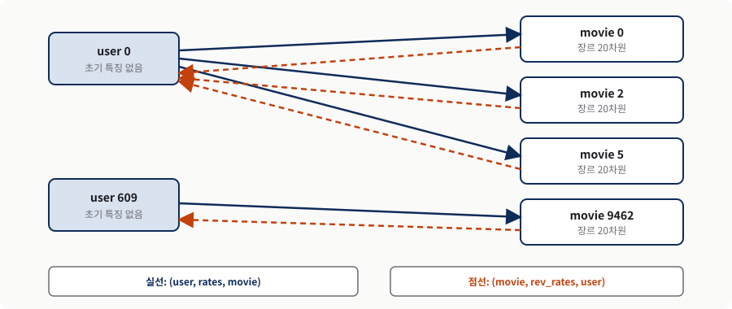
실선이 원본 평점 엣지, 점선이ToUndirected가 추가한 역방향 엣지다. 사용자 노드에 특징이 없고 영화 노드에만 20차원 장르 특징이 있다는 비대칭이 12.2.4의 임베딩 설계로 이어진다. 노드 번호 0, 2, 5, 609, 9462는 12.2.2의 출력 예시(표 12)에 나온 값이고 연결 모양은 이해를 위해 단순화했다. 출처: 교재 그림 12.8과 리스팅 12.16–12.17을 재구성.
Listing 12.17 PyG HeteroData 객체 만들기
노드 유형별 ID 목록을 붙이고, 영화에만 장르 특징 x를 붙인다. 엣지는 (출발 유형, 관계, 도착 유형) 삼중항으로 지정하고, ToUndirected()가 반대 방향 엣지를 추가해 정보가 영화에서 사용자로도 흐르게 한다. 그래야 양쪽 임베딩이 서로를 참고할 수 있다.
from torch_geometric.data import HeteroData
data = HeteroData()
data["user"].node_id = torch.arange(len(unique_user_id))
data["movie"].node_id = torch.arange(len(movies_df))
data["movie"].x = movie_feat
data["user", "rates", "movie"].edge_index = edge_index_user_to_movie
data = T.ToUndirected()(data)Listing 12.18 학습·검증·테스트 데이터셋 만들기
12.1의 수동 분할과 달리 PyG 내장 변환을 쓴다. 매개변수는 검증·테스트 비율(각 10%), 학습 엣지 중 감독용 비율 0.3, 검증·테스트 부정 샘플 비율 2, 학습 부정 샘플 생성 여부(끔), 분할할 엣지 유형, message passing에는 쓰이지만 학습 감독에는 쓰이지 않는 역방향 엣지 유형이다.
import torch_geometric.transforms as T
transform = T.RandomLinkSplit(
num_val=0.1,
num_test=0.1,
disjoint_train_ratio=0.3,
neg_sampling_ratio=2,
add_negative_train_samples=False,
edge_types=("user", "rates", "movie"),
rev_edge_types=("movie", "rev_rates", "user"),
)링크 예측의 정답은 '이 엣지가 존재한다'이다. 정답으로 쓰는 엣지를 동시에 message passing에도 쓰면 사용자 임베딩이 이미 그 영화의 정보를 받아들인 상태에서 그 연결을 맞히게 되어 문제가 쉬워진다. 그래서 학습 엣지를 message passing용 edge_index와 감독용 edge_label_index로 겹치지 않게 나눈다(해설판 서술). 역방향 짝 엣지를 rev_edge_types로 따로 지정하는 것도 같은 맥락으로 해석되지만, 정확한 처리 규칙은 PyG 문서로 확인하지 않았다. 부정 샘플은 '없는 링크'를 모델이 함께 배우게 하기 위해 인위로 만든 노드 쌍이다. 아래 도해가 두 경우의 차이를 보인다(그림 10).
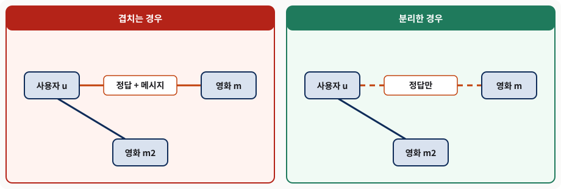
실선은 message passing에 쓰이는 엣지, 점선은 정답으로만 쓰이는 엣지다. 왼쪽에서는 사용자 u의 임베딩이 이미 영화 m의 정보를 받은 상태에서 u–m 연결을 맞히게 되어 문제가 쉬워지고, 오른쪽에서는 u가 m의 정보 없이 이 연결을 맞혀야 한다. 개념을 보이려고 만든 3노드 예이며 실제 MovieLens 값이 아니다. 출처: 12.2.3의 메시지·감독 엣지 분리 설명을 바탕으로 한 AIML Quant 보충.Listing 12.19 학습 데이터의 세부 구조
출력 예시다. message passing 엣지 56,469개와 감독 엣지 24,201개가 따로 있고, 감독 라벨에 음성은 없다(add_negative_train_samples=False). 학습 부정 샘플은 12.2.3 끝의 로더가 배치마다 만든다.
Training data:
===
HeteroData(
user={
node_id=[610]
},
movie={
node_id=[9742],
x=[9742, 20]
},
(user, rates, movie)={
edge_index=[2, 56469],
edge_label=[24201],
edge_label_index=[2, 24201]
},
(movie, rev_rates, user)={
edge_index=[2, 56469]
}
)교재 해설은 학습 세트 크기를 80,669로 쓰고 그 70%·30%가 56,469와 24,201이라고 한다. 두 값의 합은 80,670이고 이는 이어지는 검증 데이터의 message passing 엣지 수 80,670과 같다. 인쇄된 80,669는 80,670의 한 개 오차로 보이며(AIML Quant 산술 확인), 전체 엣지 100,836의 80%(80,668.8)를 반올림한 값이 아니라 두 구성 요소의 합 80,670이 일관된다.
Listing 12.20 검증·테스트 데이터셋의 세부 구조
출력 예시다. 검증 데이터는 message passing 엣지가 80,670개(학습 엣지 전체), 감독 엣지가 30,249개다. 테스트 데이터는 message passing 엣지가 90,753개, 감독 엣지가 30,249개다.
Validation data:
HeteroData(
user={
node_id=[610]
},
movie={
node_id=[9742],
x=[9742, 20]
},
(user, rates, movie)={
edge_index=[2, 80670],
edge_label=[30249],
edge_label_index=[2, 30249]
},
(movie, rev_rates, user)={
edge_index=[2, 80670]
}
)
Test data:
HeteroData(
user={
node_id=[610]
},
movie={
node_id=[9742],
x=[9742, 20]
},
(user, rates, movie)={
edge_index=[2, 90753],
edge_label=[30249],
edge_label_index=[2, 30249]
},
(movie, rev_rates, user)={
edge_index=[2, 90753]
}
)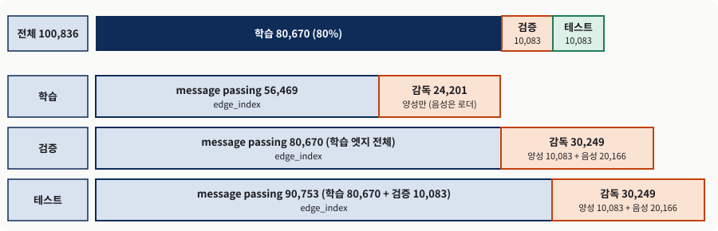
위 막대는 전체 엣지의 분할, 아래 세 줄은 분할마다 message passing에 쓰는 엣지(남색)와 감독에 쓰는 엣지(주황)다. 평가가 뒤로 갈수록 앞 단계에서 쓴 엣지가 message passing 재료로 흡수된다. 막대 길이는 대략의 비례이며 정확한 축척은 아니다. 출처: 교재 리스팅 12.19–12.20의 크기와 12.2.3 서술에서 재구성.검증 감독 엣지 30,249개는 진짜 링크 10,083개(전체의 10%)와 부정 샘플 20,166개(10,083 × 2)로 이루어진다. 테스트도 같은 구조이고, 테스트의 message passing 엣지 90,753개는 학습 엣지 80,670개와 검증 엣지 10,083개의 합이다(표 13).
| 분할 | message passing 엣지 | 감독 엣지 | 감독 양성 | 감독 음성 |
|---|---|---|---|---|
| 학습 | 56,469 | 24,201 | 24,201 | 0 (로더가 배치마다 생성) |
| 검증 | 80,670 | 30,249 | 10,083 | 20,166 |
| 테스트 | 90,753 | 30,249 | 10,083 | 20,166 |
분할 뒤에는 서브그래프를 만드는 mini-batch 로더를 정의한다. 작은 그래프에서는 필수가 아니지만 CPU·GPU 메모리를 넘는 큰 그래프에서는 중요하다.
Listing 12.21 반복마다 이웃 수 샘플링하기
LinkNeighborLoader는 감독 엣지의 양 끝 노드에서 이웃을 샘플링해 서브그래프를 만든다. num_neighbors=[20, 10]은 첫 번째 hop에서 최대 20개, 두 번째 hop에서 최대 10개의 이웃만 본다는 뜻이고, 배치 크기 128은 엣지 개수 기준이다. 같은 과정이 검증·테스트 데이터셋에도 적용된다.
from torch_geometric.loader import LinkNeighborLoader
edge_label_index = train_data["user", "rates", "movie"].edge_label_index
edge_label = train_data["user", "rates", "movie"].edge_label
train_loader = LinkNeighborLoader(
data=data,
num_neighbors=[20, 10],
neg_sampling_ratio=2,
edge_label_index=(("user", "rates", "movie"), edge_label_index),
edge_label=edge_label,
batch_size=128,
shuffle=True
)data 인자이 리스팅의 data 인자는 분할 전 전체 그래프 data이고, 바로 위에서 만든 학습 분할 train_data가 아니다. 전체 그래프를 넘기면 검증·테스트로 떼어 둔 평점 엣지가 학습 중 neighbor sampling에 포함될 수 있어, 12.2.3이 disjoint_train_ratio로 막은 누출이 로더 단계에서 되살아날 가능성이 있다. 다만 이 우려는 코드의 구조를 읽어 세운 가설이며 교재가 이를 언급하지는 않고, 실제 영향은 실행으로 확인하지 않았다. 재현 시에는 로더에 어떤 그래프를 넘기는지 먼저 점검하는 것이 좋다.
12.2.4 인코더–디코더 아키텍처 — 임베딩을 만들고 내적으로 궁합을 잰다
- 인코더는 두 단계다. 사용자·영화 임베딩을 만들고, 이질 GNN으로 이웃 정보를 얹는다.
- 디코더는 사용자 벡터와 영화 벡터의 dot product이고, sigmoid로 확률이 되어 binary cross-entropy로 평가된다.
링크 예측 모델도 인코더–디코더 구조지만 입력 특성(이질 그래프)과 과제(링크 예측)에 맞춰 부품이 다르다(그림 12). 인코더의 첫 단계 임베딩 생성에서 사용자는 고유한 특징이 없어 모델이 임베딩을 스스로 학습하고, 영화는 장르 특징 벡터가 출발 representation이 된다. 둘째 단계 이질 GNN에서 사용자 임베딩은 그가 평가한 영화의 정보로, 영화 임베딩은 그 영화를 평가한 사용자의 정보로 갱신된다. 디코더는 두 임베딩의 dot product로 유사도 점수를 계산한다. 두 벡터가 비슷한 방향을 가리킬수록 dot product가 커지므로 큰 값이 '궁합이 좋다'는 신호다.
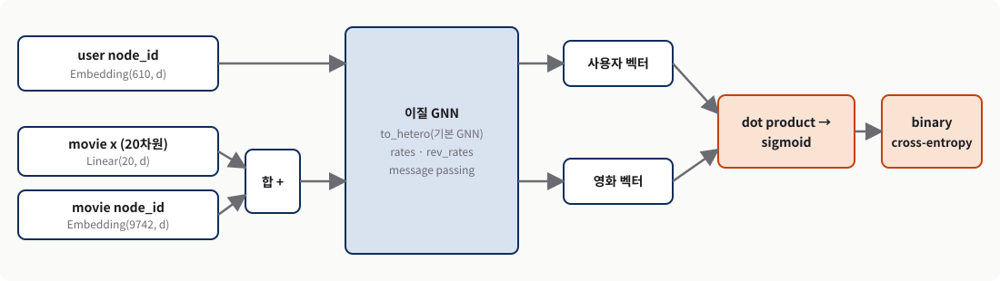
왼쪽 세 상자가 임베딩 생성, 가운데 큰 상자가 이질 GNN, 오른쪽 주황 상자 두 개가 디코더와 loss이다. 사용자는 노드 ID 임베딩 한 가지 경로뿐이고 영화는 장르 경로와 ID 경로의 합이다. 차원d는 hidden_channels다. 출처: 교재 그림 12.9와 리스팅 12.22–12.24를 재구성.
Listing 12.22 링크 예측을 위한 인코더–디코더 아키텍처
클래스 MovieLensLinkPredictor의 본문 일부다(교재 해설에는 클래스 선언과 __init__ 서명이 생략되어 있다). 임베딩 모듈, 이질 GNN, dot product 분류기를 초기화하고, forward가 임베딩 → GNN → 감독 엣지 쌍에 대한 dot product 점수 순으로 예측을 계산한다.
super().__init__()
self.embedding = MovieLensEmbedding(
data["user"].num_nodes,
data["movie"].num_nodes,
hidden_channels
)
self.gnn = gnn_model(
data.metadata(),
hidden_channels,
hidden_channels,
hidden_channels
)
self.classifier = DotProduct()
def forward(self, data):
x_dict = self.embedding(data)
x_dict = self.gnn(x_dict, data.edge_index_dict)
pred = self.classifier(
x_dict["user"],
x_dict["movie"],
data["user", "rates", "movie"].edge_label_index
)
return pred인코더 — 임베딩 생성과 이질 GNN, 두 단계
Listing 12.23 임베딩 생성을 위한 클래스
사용자에게는 단일 단계 방식, 곧 행 수가 사용자 수이고 열 수가 out_dim인 임베딩 행렬만 쓴다. 초기 특징이 없으므로 이 행렬이 학습으로 채워진다. 영화에는 두 단계 방식, 곧 20차원 장르 벡터에 선형 변환(movie_lin)을 적용한 결과와 영화 ID 임베딩(movie_emb)을 더한다. 영화는 '이미 아는 장르 정보'와 '학습으로 새로 배우는 정보'를 함께 갖는다.
import torch
class MovieLensEmbedding(torch.nn.Module):
def __init__(self, user_input_dim, movie_input_dim, out_dim):
super().__init__()
self.movie_lin = torch.nn.Linear(20, out_dim)
self.user_emb = torch.nn.Embedding(user_input_dim, out_dim)
self.movie_emb = torch.nn.Embedding(movie_input_dim, out_dim)
def forward(self, data):
return {
"user": self.user_emb(data["user"].node_id),
"movie": self.movie_lin(data["movie"].x) +
self.movie_emb(data["movie"].node_id),
}둘째 단계는 이질 GNN이다. 금융 거래 그래프와 달리 인코더가 여러 유형의 노드와 엣지를 다룬다. 동질 모델을 이질 모델로 바꾸는 것은 PyG의 to_hetero()가 맡는다.
Listing 12.24 이질 기본 인코더 구현
기본 동질 모델(base_model)을 만들고 to_hetero(model, metadata=...)로 자동 변환한다. 메타데이터는 노드·엣지 유형의 집합이고, 합성곱 연산이 이 메타데이터에 명시된 노드와 엣지를 따라 진행된다. forward는 유형별 특징 사전과 유형별 엣지 인덱스 사전을 받아 노드 유형마다 임베딩을 낸다.
import torch
from torch_geometric.nn import to_hetero
class HeteroBaseModel(torch.nn.Module):
def __init__(self, metadata, input_dim, hidden_dim, out_dim, base_model):
super(HeteroBaseModel, self).__init__()
self.base_model = base_model(input_dim, hidden_dim, out_dim)
self.hetero_model = to_hetero(self.base_model, metadata=metadata)
def forward(self, x_dict, edge_index_dict):
return self.hetero_model(x_dict, edge_index_dict)Listing 12.25 HeteroSAGE 모델 구현
12.1에서 만든 SAGE 클래스를 그대로 인자로 넘겨 이질 모델을 조립한다. 이 장의 이질 그래프에는 엣지 유형이 ("user", "rates", "movie") 하나뿐이지만, 더 복잡한 시나리오에서는 여러 유형에 서로 다른 합성곱을 지정할 수 있다.
class HeteroSAGE(HeteroBaseModel):
def __init__(self, metadata, input_dim, hidden_dim, out_dim):
super(HeteroSAGE, self).__init__(
metadata,
input_dim,
hidden_dim,
out_dim,
SAGE
)디코더 — dot product와 binary cross-entropy의 결합
디코더는 GNN이 낸 사용자·영화 임베딩의 dot product를 계산해 궁합을 점수로 만든다. 이 점수에 PyTorch의 F.binary_cross_entropy_with_logits가 짝을 이룬다. 이 함수는 sigmoid 활성화와 binary cross-entropy loss를 하나로 합쳐, 점수를 링크가 존재할 확률로 해석하고 예측 확률과 실제 라벨의 차이를 잰다. 노드 분류에서 softmax + cross-entropy가 여러 클래스 중 하나를 고르는 문제였다면, 여기서는 sigmoid + binary cross-entropy가 '링크가 있다/없다'의 이진 문제를 다룬다.
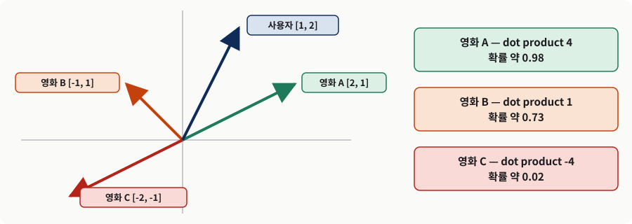
사용자 벡터와 방향이 비슷할수록 dot product가 크고 확률이 1에 가깝다. 영화 A는 dot product 4(확률 약 0.98), B는 1(약 0.73), 반대쪽을 향한 C는 -4(약 0.02)다. 2차원으로 줄인 가상의 벡터이며 학습된 임베딩이 아니다. 출처: 12.2.4의 dot product 디코더 설명을 바탕으로 한 AIML Quant 보충.숫자로 읽어 보자(이해를 위한 예). 사용자 벡터 $[1,2]$와 영화 벡터 $[2,1]$의 dot product는 $1\times2+2\times1=4$이고 sigmoid $1/(1+e^{-4})$는 약 0.982다. 이 쌍이 실제 링크(라벨 1)면 벌점은 $-\ln 0.982\approx0.018$로 작고, 실제 링크가 없는 쌍(라벨 0)이면 $-\ln(1-0.982)\approx4.02$로 크다. 점수 0은 확률 0.5이고 벌점은 어느 쪽이든 약 0.693이다.
11장 연결 ⑤에서 보았듯 이 디코더가 쓰는 사용자 벡터의 출발점은 학습되는 lookup 테이블이고, 영화 벡터는 장르 특징이 있어 학습 때 없던 영화도 장르만 알면 출발 representation을 만들 수 있다는 점이 다르다(구조에서 읽히는 AIML Quant 해석이며 교재가 직접 서술하지는 않는다).
12.2.5 평가와 분석 — 링크 예측에서의 GCN·GAT·SAGE
- 링크 예측 모델은 임베딩 layer와 이질 GNN 때문에 노드 분류 모델보다 매개변수가 수백 배 많고 학습 시간이 훨씬 길다.
- 저자들은 SAGE의 정밀도와 F1이 가장 높다고 보고하고, 재현율은 GCN이 가장 높다고 한다.
- 테스트 혼동 행렬은 모델마다 '신중함'과 '포괄성'의 균형이 다름을 보여 준다.
세 엔드투엔드 모델을 T4 Colab에서 55 epoch 돌린 결과다(표 14). 저자들의 GCN 구현은 그래프 유형에 따라 PyG 연산자가 다르다. 동질 그래프에서는 차수 정규화를 적용하는 정통 GCNConv를, 이질 그래프에서는 HeteroConv 래퍼와 자연스럽게 결합되는 밀접한 변종 GraphConv를 쓴다. GCNConv는 단일 노드·엣지 유형을 가정해 이질 그래프에 직접 쓸 수 없고, GraphConv는 이질 환경에 필요한 루트와 이웃에 대한 별도 변환을 지원한다. 곧 12.1의 GCN과 12.2의 GCN은 같은 이름이지만 같은 layer가 아니다(11장 연결 ③).
| 인코더 | 매개변수 수 | 학습 시간(초) |
|---|---|---|
| GCN | 713,408 | 826 |
| GAT | 1,066,880 | 956 |
| SAGE | 713,408 | 777 |
SAGE가 가장 효율적이고 GAT가 가장 비효율적이며 GCN이 중간이다. 저자들은 매개변수가 노드 분류보다 크게 많은 이유를 사용자·영화 임베딩 layer의 추가와 이질 GNN의 사용으로 설명한다. 표의 숫자에서 계산하면 GCN은 12.1의 2,723개에서 713,408개로 약 260배이고 학습 시간은 19초에서 826초로 약 43배다(AIML Quant 산술). 같은 GCN 이름이라도 두 절의 layer와 설정이 다르므로 이 배율을 일반적인 규모 법칙으로 읽으면 안 된다.
정밀도, 재현율, F1 점수 — 추천 맥락으로 다시 읽기
같은 세 지표가 추천 질문으로 번역된다. 정밀도는 링크가 있다고(영화를 추천한다고) 예측한 것 중 맞은 비율, 재현율은 사용자가 평점을 매길 만한 영화 중 모델이 찾아낸 비율, F1은 둘의 균형이다. 검증 데이터셋의 지표 추이(교재 그림 12.10)에 대한 저자들의 해석은 다음과 같다.
- 정밀도 — SAGE가 가장 높아 사용자가 평점을 매길 가능성이 낮은 무관한 추천이 적다. GCN은 약간 뒤처지지만 높은 정밀도를 유지한다. GAT가 가장 낮고 epoch에 걸친 변동이 크다.
- 재현율 — GCN이 가장 높고 SAGE가 약간 낮은 값으로 바짝 뒤따른다. GAT는 재현율에서 고전해 실제 링크의 상당 부분을 놓친다.
- F1 — SAGE가 가장 높다. GCN은 높은 재현율 덕에 잘 수행하지만 약간 낮은 정밀도가 균형을 약화시킨다. GAT는 낮은 정밀도와 재현율로 경쟁력 있는 F1을 얻기 어렵다.
혼동 행렬 — 존재하는 링크와 없는 링크를 나눠 보기
테스트 데이터셋의 혼동 행렬은 그림 14과 같다. 교재 본문이 제시한 개수와 비율을 옮겼다. 각 행렬에서 실제 링크 없음은 20,166개, 링크 있음은 10,083개로 12.2.3의 테스트 감독 구성(양성 10,083 + 음성 20,166)과 일치한다.
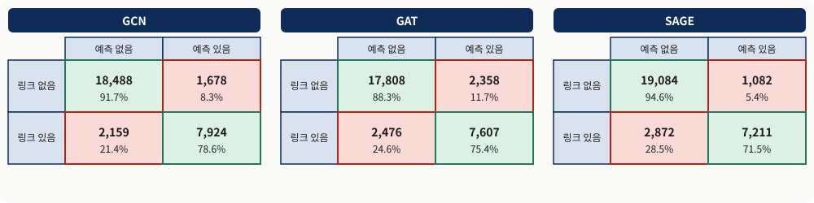
행은 실제 클래스, 열은 예측이며 비율은 각 행(실제 클래스) 안에서의 몫이라 행마다 합이 100%다. 초록은 맞힌 칸, 빨강은 틀린 칸이다. SAGE는 틀린 추천(오른쪽 위)이 가장 적고 GCN은 놓친 링크(왼쪽 아래)가 가장 적다. 출처: 교재 §12.2.5 본문의 개수·비율을 2×2로 재구성.- SAGE — 존재하지 않는 링크의 94.6%를 맞히고(참 음성 19,084), 실제 링크의 71.5%를 찾으며(참 양성 7,211) 28.5%를 놓친다(거짓 음성 2,872). 거짓 양성은 1,082개(5.4%)로 가장 적다.
- GCN — 존재하지 않는 링크의 91.7%(참 음성 18,488), 실제 링크의 78.6%(참 양성 7,924)를 맞힌다. 거짓 음성 2,159개로 SAGE보다 덜 놓치지만 거짓 양성은 1,678개(8.3%)로 더 많다.
- GAT — 존재하지 않는 링크의 88.3%(참 음성 17,808), 실제 링크의 75.4%(참 양성 7,607)를 맞힌다. 거짓 음성 2,476개(24.6%)와 거짓 양성 2,358개(11.7%)가 모두 GCN보다 많다.
저자들의 결론은, 세 모델이 정도의 차이는 있으나 모두 잘 수행하며 SAGE는 무관한 추천을 줄이는 정밀도에서, GCN은 잠재 평점을 포착하는 것과 무관한 추천을 피하는 것 사이의 균형에서 두각을 나타내고 GAT는 사용자가 평점을 매기지 않을 영화를 과도하게 추천하는 경향이 있다는 것이다.
| 모델 | 양성(링크 있음) 정밀도 | 양성 재현율 | 양성 F1 | 전체 정확도 | 두 클래스 가중 F1 |
|---|---|---|---|---|---|
| GCN | 0.825 | 0.786 | 0.805 | 0.873 | 0.872 |
| GAT | 0.763 | 0.754 | 0.759 | 0.840 | 0.840 |
| SAGE | 0.870 | 0.715 | 0.785 | 0.869 | 0.866 |
표 15은 그림 14의 개수에서 정의대로 계산한 값이다(예: SAGE 정밀도 7,211 ÷ (7,211 + 1,082) = 0.870, 재현율 7,211 ÷ 10,083 = 0.715). 이 표의 성격을 구분해야 한다. 첫째, 계산 대상은 테스트 혼동 행렬이고, 저자들이 'SAGE의 F1이 가장 높다'고 한 근거는 검증 곡선이다. 둘째, 두 클래스를 표본 수로 가중해 평균하면 테스트 개수만으로는 GCN(0.872)이 SAGE(0.866)보다 약간 높다. 이는 교재의 검증 곡선 결론을 반박하는 것이 아니라, 평가 데이터와 평균 방식에 따라 모델 순위가 달라질 수 있어 한 지표·한 데이터로 '최고 모델'을 단정하기 어렵다는 뜻이다. 셋째, 전부 '링크 없음'이라 답하는 기준 모델의 정확도는 20,166 ÷ 30,249 ≈ 0.667이므로 세 모델 모두 이를 넘는다.
거짓 양성은 '엉뚱한 추천', 거짓 음성은 '놓친 취향'이다. 신규 사용자에게 취향의 폭을 보여 주는 것이 중요하면 거짓 음성이 적은 쪽(여기서는 GCN)을, 이미 신뢰를 쌓은 서비스에서 실망을 줄이는 것이 중요하면 거짓 양성이 적은 쪽(여기서는 SAGE)을 고려할 수 있다. 12.1에서는 SAGE가 정밀도와 F1을 함께 이끌었지만 12.2에서는 정밀도 1위가 재현율 열세와 함께 왔다. 같은 인코더도 과제와 데이터에 따라 다르게 치우치므로 'SAGE가 가장 좋다'는 일반 규칙으로 외우면 안 된다. 판정 임계값이나 부정 샘플 비율을 바꾸면 두 오류의 균형이 달라질 수 있으나 이 리포트는 그 실험을 하지 않았다.
요약과 토론 질문
- 그래프 신경망은 노드 분류와 링크 예측 같은 그래프 기반 ML의 근본 과제를 해결한다.
- 과제 영역이 달라도 여러 단계로 이루어진 일반적인 인코더–디코더 프레임워크를 정의할 수 있다. 인코더는 GCN·GAT·SAGE 같은 GNN이고 디코더는 학습된 representation에 과제별 함수를 적용한다.
- 그래프 데이터의 복잡한 관계를 포착하는 능력 덕에 GNN은 사기 탐지와 추천처럼 다양한 영역의 실제 문제에 가치가 있다.
| 구성 요소 | 12.1 노드 분류(AML) | 12.2 링크 예측(추천) |
|---|---|---|
| 예측 단위 | 노드 하나(거래) | 노드 쌍(사용자, 영화) |
| 그래프 | 동질 Data | 이질 HeteroData + 역방향 엣지 |
| 분할 방식 | 노드 mask 80/10/10 (손으로 작성) | RandomLinkSplit 엣지 분할 + 메시지·감독 엣지 분리 |
| 초기 특징 | 익명화된 166개 특징 | 영화 장르 20차원, 사용자는 없음(임베딩 학습) |
| 인코더 | GCN(GCNConv)·GAT·SAGE | GCN(GraphConv)·GAT·SAGE의 to_hetero 변환 |
| 디코더·loss | log_softmax + cross-entropy | dot product + binary cross-entropy |
| 클래스 불균형 | 합법 약 90% : 불법 약 10% | 평가 감독에서 음성 : 양성 = 2 : 1 |
| 보고된 학습 비용 | 2,723–22,025 매개변수, 19–43초 | 713,408–1,066,880 매개변수, 777–956초 |
| 보고된 선두 | SAGE (정밀도·F1·불법 정탐률) | SAGE는 정밀도·F1, GCN은 재현율 |
- 불법이 라벨 있는 노드의 약 10%인 데이터에서 가중 평균 F1로 모델을 고르면 어떤 위험이 있고, 혼동 행렬 외에 어떤 지표를 추가하겠는가?
- 추천 서비스에서 거짓 양성(엉뚱한 추천)과 거짓 음성(놓친 취향)의 비용이 서로 다르다면 GCN과 SAGE 중 어느 쪽을 어떤 근거로 고르겠는가?
- 새 사용자나 새 거래가 계속 들어오는 환경에서, 12.1의 mask 분할과 12.2의 사용자 임베딩 행렬은 각각 어떤 가정을 깔고 있는가?
핵심 용어
| 용어 | 이 장에서의 의미 |
|---|---|
| 그래프 신경망(GNN) | 그래프 구조 데이터를 학습하는 신경망. 노드가 이웃 정보를 집계해 자기 representation을 갱신한다. |
| 노드 분류 | 각 노드가 어느 범주에 속하는지 맞히는 과제(합법/불법). |
| 링크 예측 | 두 노드 사이 연결의 존재를 맞히는 과제(사용자–영화). |
| GCN | 이웃 특징을 차수로 정규화해 집계하는 GNN layer. 이질 그래프에서는 GraphConv로 대체됨. |
| GraphSAGE(SAGE) | 이웃을 샘플링·집계해 노드 representation을 학습하는 GNN. 이 장에서 전반적으로 좋은 균형을 보인 것으로 보고됨. |
| GAT | 이웃마다 attention 가중치를 학습하는 GNN. 매개변수가 많고 학습이 오래 걸림. |
| PyTorch Geometric(PyG) | 그래프 딥러닝을 위한 PyTorch 기반 라이브러리. |
| 자금세탁 방지(AML) | 불법 자금의 흐름을 탐지·차단하는 활동. 12.1의 응용 사례. |
| 동질 그래프 / 이질 그래프 | 노드·엣지 유형이 하나인 그래프 / 여러 유형인 그래프. |
| 임베딩 | 노드를 저차원 실수 벡터로 표현한 것. 유사한 노드는 가까운 벡터를 가진다. |
| message passing | 노드가 이웃의 representation을 모아(AGGREGATE) 자기 representation을 갱신(UPDATE)하는 GNN의 핵심 연산. |
| 인코더–디코더 | 인코더(GNN)가 representation을 만들고 디코더가 과제별 예측을 내는 구조. |
| edge_index | 엣지를 [2, 엣지 수]로 담은 텐서. 윗줄 출발, 아랫줄 도착. |
| mask | 어떤 노드를 학습·검증·테스트에 쓸지 True/False로 표시한 필터. |
| 로그 softmax / cross-entropy | 클래스 점수를 로그 확률로 바꾸는 함수 / 예측과 정답의 차이를 재는 분류 loss. |
| dot product | 두 벡터의 유사도 점수. 링크 예측의 디코더. |
| binary cross-entropy | 링크 있음/없음 이진 예측의 loss. sigmoid와 함께 쓴다. |
| 부정 샘플 | 실제로 존재하지 않는 링크. 모델이 '없음'도 배우도록 인위로 만든다. |
| 정밀도 / 재현율 / F1 | 양성이라 한 것 중 맞은 비율 / 실제 양성 중 찾은 비율 / 둘의 조화 평균. |
| 혼동 행렬 | 클래스별 참·거짓 양성·음성의 개수를 정리한 표. |
| to_hetero() | 동질 GNN을 메타데이터에 맞춰 이질 GNN으로 변환하는 PyG 함수. |
| shallow 임베딩 | 노드마다 벡터 한 줄을 갖는 lookup 테이블 방식(11장). 12.2의 사용자 임베딩이 이 구조다. |
| 전이적 / 귀납적 학습 | 고정된 노드 집합에 최적화하는 방식 / 처음 보는 노드에도 적용되는 사상을 배우는 방식(11장). |
참고 자료와 도형 출처
- [1]Alessandro Negro 외, Knowledge Graphs and LLMs in Action, Manning, 2025. 12장 「Node classification and link prediction with GNNs」(이 리포트는 한국어 해설판을 원자료로 삼음). 출처: 12장 해설판 안내.
- [2]같은 책 11장 「Graph representation learning and graph neural networks」('11장 연결' 절의 근거). 출처: 11장 해설판 안내.
- [3]GCN(Kipf & Welling), GraphSAGE(Hamilton 외), GAT(Veličković 외). 12장은 이 세 모델을 각각 원문 참고문헌 [1], [2], [3]으로 인용하며, 11장 해설은 Kipf와 Welling의 대칭 정규화와 Veličković 외의 그래프 attention 네트워크를 소개한다. 서지 세부는 원문 References 절 참조.
- [4]Elliptic 데이터셋(비트코인 거래 그래프) 및 GroupLens MovieLens
ml-latest-small(교재가 2025년 1월 기준으로 안내한 배포처files.grouplens.org/datasets/movielens/). - [5]이 리포트의 도형은 모두 위 자료의 구조·수치를 새로 그린 AIML Quant 재구성이며 원본 그림을 복제하지 않았다.